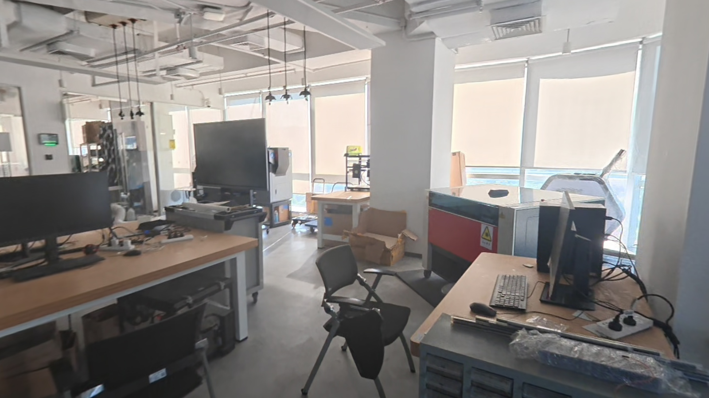

TEZOI 具身仿真演示

Pipeline
Ego · 真实第一视角示范
滴管取液与摇杯混合
接触点力峰值0 N
0 N
Robotics · 真机验证
Features
Physical Interaction
连锁接触与动量传递
一次倾倒触发连续碰撞，观察刚体间的动量传递。
Rigid contact / IPC弹性形变与卸载恢复
接触载荷下的压缩与展开，以及卸载后的弹性恢复。
Elastic deformation / IPC线束弯曲与接触
线束在重力与碰撞作用下弯曲下垂，与支撑结构形成接触。
Deformable contact / IPC液体流动与流固接触
液体绕障流动，与容器和固体表面形成耦合响应。
Fluid–solid coupling凝胶形变与接触力
凝胶表面的压入形变，与对应的接触力分布同步变化。
Gel deformation / Contact force液体仿真
刚体仿真
柔性仿真
触觉仿真
切割仿真
Scene Reconstruction


实拍 / Real重建 / 3DGS POINT CLOUD → 3DGS → TOUR / 02

 Real
Real2Sim
Real
Real2Sim
正在加载对比画面…